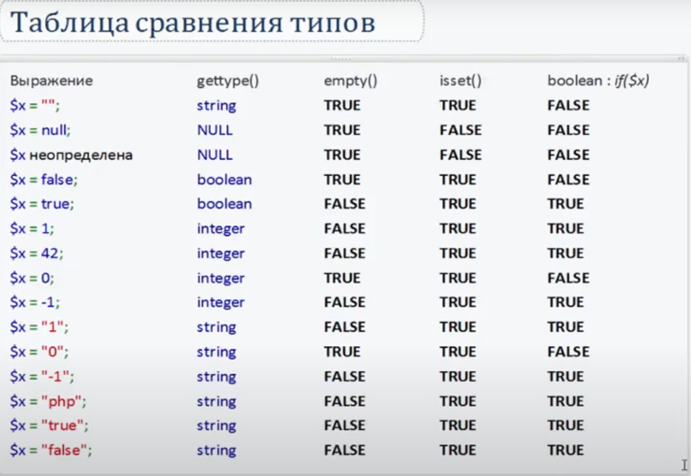

Функции связанные с типами данных:
Насильно приводим к другому типу:
Проверка isset(), устанавливает лежит ли в переменной хоть что то кроме null. Эта функция вернёт false только тогда когда переменной нет и когда в ней null.
Проверка на пустоту - empty(). 
PHP в отличии от JS может самостоятельно привести сроку '3word' при сравнении к числу, а в JS нужно сначала parseInt('3word') сделать.
Также заметил что в php при вычислении 3 && 4 вернётся логическое значение true, а в js вернётся 4
В отличии от js в php есть разница между этими кавычками. Двойные кавычки видят внутри себя переменную, а одинарные нет. В двойных кавычках если подставляем переменную, то лучше тогда её подставлять в {}:
$lang = 'php';
$str = 'Я изучаю $lang'; // 'Я изучаю '
$str = "Я изучаю $lang"; // 'Я изучаю php'
$str = "Я изучаю {$lang}"; // 'Я изучаю php'(правельней всего)
Есть такая дериктива как HEREDOC, в неё можно записывать строки с разными кавычками и он всё поймёт:
$lang['language'] = 'php';
$str = <<<HEREDOC
"Я изучаю {$lang['language']}"
HEREDOC;
В отличии от js в php работа в строках идёт не с символами, а с байтами.
Получение символа строки, длина строки:
$str = 'word';
$str2 = 'слово';
echo $str{2}; // r
echo $str2{0}; // ??, не понимает
echo strlen($str); // 4
echo strlen($str2); // 10, потому что русские символы
echo mb_strlen($str2); // 5, теперь нормально
echo $str{strlen($str) - 1}; // d
Склеивать строки можно 2мя спсобами:
$str = 'word';
$str2 = 'of';
$str3 = 'tanks';
echo $str . ' ' . $str2 . ' ' . $str3; //word of tanks
echo "{$str $str2 $str3}";// word of tanks
При явном преобразрвании строки в число вот так - $str = (int)'word', получим 0, если в начале строки не будет цифр.
Через файл .htaccess можно настраивать PHP. Например можно отключить директиву коротких кавычек, пишем такую строку php_flag short_open_tag off. Перезапустим сайт и посмотрим на инфу через функцию phpinfo(). На сайте увидим в столбце Local Value, что короткие кавычки теперь отключены. Если же изменить напрямую в файле php.ini эту настройку, то уже глобально отключится эта директива. Об этом говорится в видео специалиста Уровень 1, Урок 1 из 3, на 01:03:30. Эти видео у меня на компе в разделе php от специалиста.
При echo true; выведится '1'. При echo false; выведится пустая строка ''. false при приведении к числу даст 0. true к числу даст 1
echo strftime('Сегодня %d-%m-%Y');//Сегодня 23-03-2021
echo strftime('Сегодня %d-%B-%Y');//Сегодня 23-March-2021
//Чтобы месяц был по русски, пишем так:
setlocale(LC_ALL, "russian");
$day = strftime('%d');
$mon = strftime('%B');
$mon = iconv('windows-1251', 'utf-8', $mon);
$year = strftime('%Y');
echo $mon; // Март